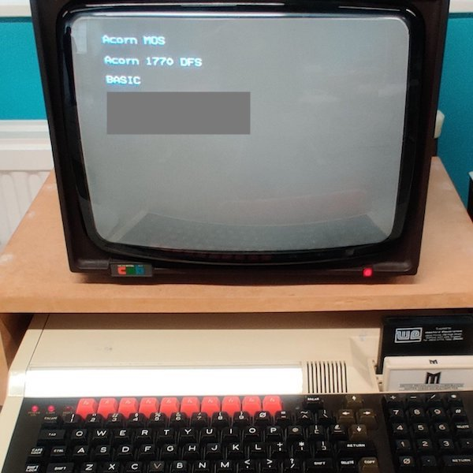
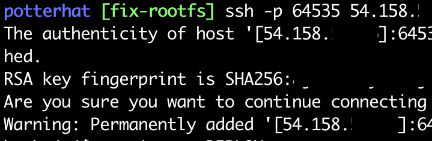
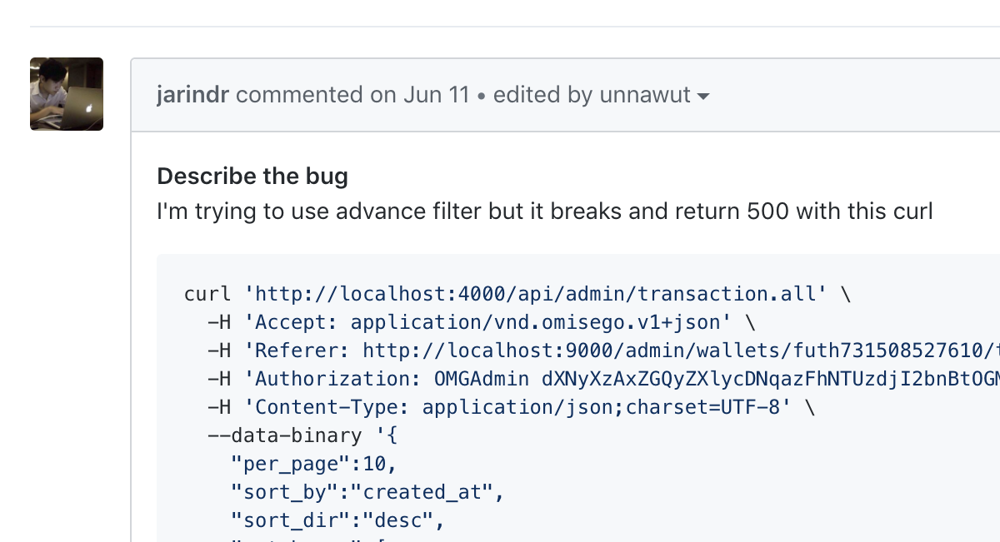
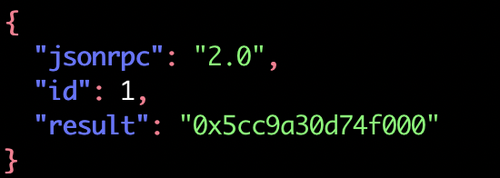
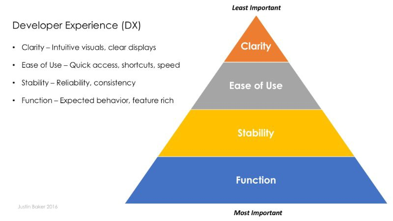

Building an interactive CLI app that people will love in Elixir
Unnawut Leepaisalsuwanna, @unnawut
Software Engineer at OmiseGO
July 18th, 2019
My claim today...
Command line interfaces should be adopted
as a first-class citizen in your Elixir app.
- Why CLI?
- Developer Experience (DX) in CLIs
- Elixir core features for CLI apps
- Lessons learnt

A BBC Micro at the National Museum of Computing, Bletchley Park (
@tnmoc)
A BBC Micro at the National Museum of Computing, Bletchley Park (
@tnmoc)
A BBC Micro at the National Museum of Computing, Bletchley Park (
@tnmoc)
Why CLI?
- Light-weight, minimum-viable interface
-
-
-
-
-

Why CLI?
- Light-weight, minimum-viable interface
- Utilizes OS/infra-level features
-
-
-
-
- SSH for secure transport
- OS login for authentication
- User and group permission for authorization
Why CLI?
- Light-weight, minimum-viable interface
- Utilizes OS/infra-level features
- Facilitates reproducibility
-
-
-

Why CLI?
- Light-weight, minimum-viable interface
- Utilizes OS/infra-level features
- Facilitates reproducibility
- Allows rule enforcements
-
-
defp do_set_config(key, value) do
key
|> Config.get_setting()
|> case do
^value -> {:unchanged, value}
_ -> MySchema.do_update(key, value)
end
end
Why CLI?
- Light-weight, minimum-viable interface
- Utilizes OS/infra-level features
- Facilitates reproducibility
- Allows rule enforcements
- Increases composability
-
my_app balance "bal123456" | jq

Why CLI?
- Light-weight, minimum-viable interface
- Utilizes OS/infra-level features
- Facilitates reproducibility
- Allows rule enforcements
- Increases composability
- Enables automation
deploy:
steps:
- checkout
- run: my_app conf_secret "$SECRET"
- run:
command: sh .circleci/ci_slack.sh failure
when: on_fail
- Why CLI?
- Developer Experience (DX) in CLIs
- Elixir core features for CLI apps
- Lessons learnt
Delivering robust functionality that is stable, speedy, and visually intuitive.
‐ Justin Baker

Developer Experience (DX) — Devs Are People Too (Justin Baker, 2017)
- Why CLI?
- Developer Experience (DX) in CLIs
- Elixir core features for CLI apps
- Lessons learnt
Write & read to IO
IO.puts/2, IO.write/2
IO.puts("Hello World!")
#=> Hello World!
IO.write("Hello World!")
#=> Hello World!
IO.gets/2
"Hello, " <> IO.gets("Name?\n")
#=> Name?
# Enters John Doe
#=> Hello, John Doe
Colors with IO.ANSI
defmodule EWallet.CLI do
def info(message), do: [:normal, message] |> IO.ANSI.format() |> IO.puts()
def debug(message), do: [:faint, message] |> IO.ANSI.format() |> IO.puts()
def success(message), do: [:green, message] |> IO.ANSI.format() |> IO.puts()
def warn(message), do: [:yellow, message] |> IO.ANSI.format() |> IO.puts()
def error(message) do
formatted = IO.ANSI.format([:red, message])
IO.puts(:stderr, formatted)
end
end
CLI.info("This is informational")
CLI.error("Something went wrong")
OptionParser
How would you parse my_app --help --unsupported some_args?
OptionParser.parse/2
OptionParser.parse(argv(), options()) :: {parsed(), argv(), errors()}
iex> OptionParser.parse(["--help --unsupported some_args"], strict: [help: :boolean])
{[help: true], ["some_args"], [{"--unsupported", nil}]}
- Why CLI?
- Developer Experience (DX) in CLIs
- Elixir core features for CLI apps
- Lessons learnt
Custom release commands
rel/config.exs
release :my_app do
# ...
set commands: [
save_secret: "rel/commands/save_secret.sh"
]
end
rel/commands/save_secret.sh
#!/bin/sh
# Same as: mix save_secret "foo" "bar"
release_ctl eval --mfa "Mix.Tasks.SaveSecret.run/1" --argv -- "$@"
Run with bin/my_app save_secret "foo" "bar"
Don't invent a new language
- Usign unfamiliar terms mean learning curve and confuses users
- When in doubt, consult
mix help.
- GNU Coding Standard's Table of Long Options (Link)
stdout vs. stderror
IO.puts(device \\ :stdio, item)
mix run -e 'IO.puts("info"); IO.puts(:stderr, "error")' 1>/dev/null
# error
- Customizable logging
- More efficient monitoring and diagnostics
Use options, not IO.gets/2
- CLI interactiveness is about returning promptly
- Input prompts prevent automation
- Use options for inputs, return error when missing
- Supports `-y`, `--yes`, `--assume-yes` to bypass all confirmations
def assume_yes?(args), do: args in ["-y", "--yes", "--assume-yes"]
Exit codes
| Code |
Meaning |
| 0 | Success |
| 1 | Catchall for general errors |
| ... | ... |
System.stop/1 and System.halt/1:
System.stop(0) # Gracefully shuts down with exit status 0 (success)
System.halt(1) # Forceful immediate halt with exit status 1 (error)
See: Exit Codes With Special Meanings
- Why CLI?
- Developer Experience (DX) in CLIs
- Elixir core features for CLI apps
- Lessons learnt
Further readings
- Vitaly Tatarintsev's Writing a command line app in Elixir (Link)
- Dennis Beatty's Cool CLIs in Elixir (Part 1, Part 2)
- Unix Interface Design Patterns (Link)